AI Academy · Level 1 · Grade 6 · Week 22 · Student lesson
Missing and Unbalanced Examples
Learn to understand, design, build, test and explain AI systems responsibly.
Project: Helpful Classroom Sorter
Before you start
Week 15: fresh tests should be independent of training.
Plan time to read, investigate and explain. Keep predictions separate from observations.
Student lesson · 1 of 14
Your mission
Your learning target
I can name the target collection, selection list and cases actually assessed.
I can use a coverage table to identify missing conditions before making a claim.
I can propose a selection plan that addresses a stated gap without promising certainty.
Remember before reading
Close your notes first. A rough first answer helps us choose the right starting point; it is not a score for your ability.
Without opening the old lesson, explain one key idea from Good Data, Bad Data. Give an example and a mistake that the idea helps you avoid.
Without opening the old lesson, explain one key idea from Similarity. Give an example and a mistake that the idea helps you avoid.
Without opening the old lesson, explain one key idea from Boundaries and 'Not Sure'. Give an example and a mistake that the idea helps you avoid.
After trying, check the relevant lesson or ask your teacher. Change the part of your explanation that the evidence shows was wrong.
What is absent can shape a system's failures.
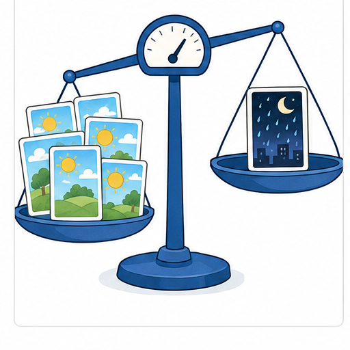
Learner name:
Readiness for the connected explanation
A table has been checked and every recorded value matches its source. Does that prove it includes all the conditions in which a system will be used? Explain.
This week’s end goal
By the end, I can identify missing conditions and design a targeted coverage check.
Student lesson · 2 of 14
Notice the evidence
PICTURE STORY
Look Closely Before You Explain
Pictures give clues; evidence tells us what the clues mean.

What do you notice?
Name three visible details without explaining them yet.
Circle the detail most connected to the system's decision.
Name one detail that may be decoration or distraction.
Make a first prediction and state the clue that supports it.
My observations, prediction, and evidence:
A closer explanation
Suppose a shape recogniser will be evaluated on a fixed collection of 24 invented picture cards. This target population has 6 bright circles, 6 dim circles, 6 bright squares and 6 dim squares. Each card has its own ID and an independently checked circle or square label. We want to know how often the recogniser gives the correct label across these 24 cards.
A tester takes the 6 bright-circle cards nearest the front of the box. Those 6 cards form the sample; the other 18 have not been assessed. The recogniser is correct on 5 of the 6 sampled cards. That is a result for these assessed bright circles. It does not establish correctness on the squares or dim cards.
A sampling frame is the list or source available for selection. A complete list of all 24 IDs could give every card a chance of selection. A list containing only bright-circle IDs cannot select dim cards or squares, even if the choice from that list is random. These fictional picture cards do not contain personal information.
Student lesson · 3 of 14
See how it works
VISUAL MECHANISM
Input → Process → Output
Follow the information instead of imagining magic inside the machine.
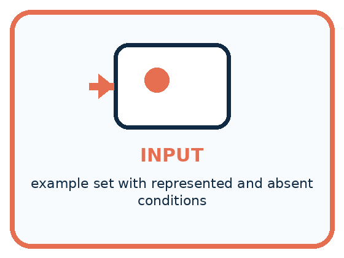
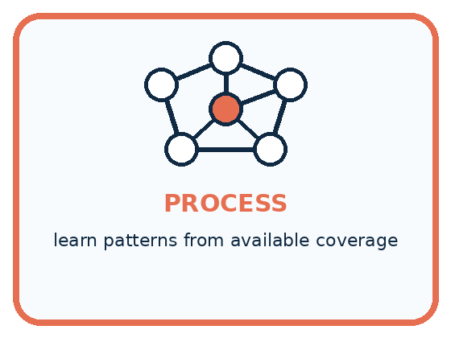
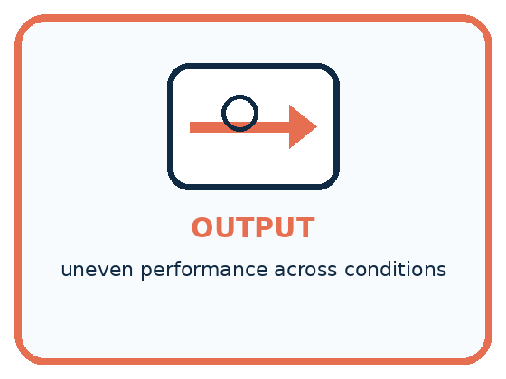
INPUT example set with represented and absent conditions
PROCESS learn patterns from available coverage
OUTPUT uneven performance across conditions
Draw a fresh example with all three stages:
A closer explanation
Coverage is about cases as well as counts
The target has 24 distinct cards, but the sample covers only the 6 bright circles. Photographing each sampled card twice would create 12 image records without adding a new card or covering a missing condition. Record the identity of the underlying case as well as the number of files.
Both shape and lighting matter to this question. A sample with bright circles and dim squares includes each shape and each lighting label, yet still misses dim circles and bright squares. Check combinations when the interaction could matter, not just whether each individual label appears somewhere.
Connect the picture and the explanation
Point to the input, the deciding step and the result in this week’s visual. Explain the same step in ordinary words. A picture helps when you can say what each part represents.
Student lesson · 4 of 14
Compare the cases
PICTURE GALLERY
Four Cases, Four Clues
Use the visual cue, then read the evidence carefully.
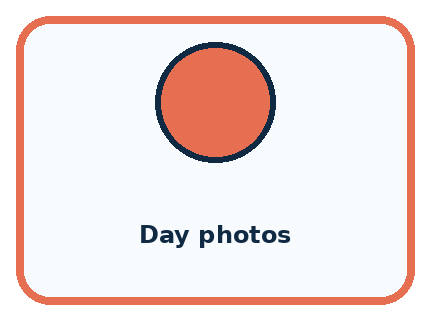
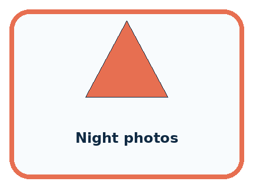
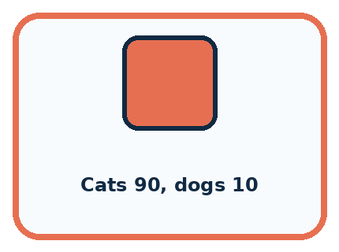
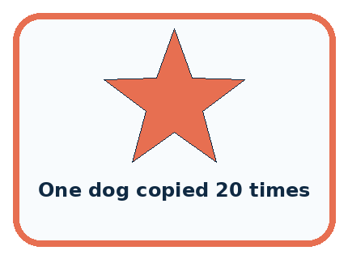
CASE 1 — Day photos Clue: many clear examples. Meaning: strong represented condition.
CASE 2 — Night photos Clue: none available. Meaning: coverage gap.
CASE 3 — Cats 90, dogs 10 Clue: uneven class counts. Meaning: class imbalance.
CASE 4 — One dog copied 20 times Clue: count rises, variety does not. Meaning: weak repair.
Which two pictures are easiest to confuse? What evidence separates them?
Change one thing in the pictured case
Change: Add eight more bright plain cards and no dim cards.
Prediction: The sample becomes larger but still has no dim coverage.
Reason: The missing lighting condition remains untested.
Student lesson · 5 of 14
Words that unlock the idea
VOCABULARY
Words You Can See and Use
The badge is a memory cue; the definition does the real thinking work.
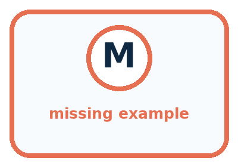
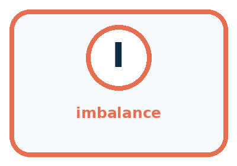
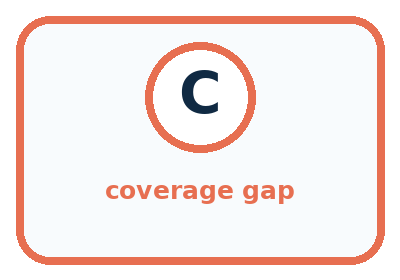
| Word | Meaning | My example |
|---|---|---|
| missing example | needed condition absent from data | |
| imbalance | some groups appear much more than others | |
| subgroup | defined part of the intended population | |
| coverage gap | important situation poorly represented |
Misconception detective
CLAIM TO REPAIR A model can infer missing conditions automatically.
Use one vocabulary word and one piece of evidence to repair it:
Words used in the closer explanation
| Word | Meaning |
|---|---|
| Target population | The whole collection of cases a question is about |
| Sample | The selected cases used to investigate a larger collection |
| Sampling frame | The list or source from which cases can be selected |
| Coverage | Which relevant kinds of cases the list or sample includes |
| Selection bias | Systematic distortion caused by how cases enter an investigation |
Student lesson · 6 of 14
Follow a worked example
WORKED EXAMPLE
Watch the Reasoning, Not Just the Answer
Every step connects a claim to observable evidence.

STEP 1 — OBSERVE example set with represented and absent conditions
STEP 2 — TRACE learn patterns from available coverage
STEP 3 — CONCLUDE uneven performance across conditions
What new evidence could change this answer?
A closer explanation
| Plan | What it helps with | Limit to report |
|---|---|---|
| Take cards at the front | Quick initial check | Front position may restrict conditions |
| Draw from all 24 IDs by chance | Every listed card can be selected | A small draw need not balance conditions |
| Choose 2 distinct cards per condition | Includes all four conditions | 8 cards do not establish all 24 outcomes |
| Assess all 24 distinct cards | Covers this entire fixed collection | Does not prove performance on future images |
For a broad estimate, a chance-based plan should start from a suitable complete list and use a documented selection procedure. For investigating missing conditions, deliberately selecting cases from each condition can be useful. State which purpose you chose. A set built to expose problems is not automatically a faithful miniature of everyday use.
Selection bias is about a systematic feature of the selection process, not whether a person had bad intentions. Choosing only easy-to-reach, bright cards can leave harder conditions out. More cases from the same narrow source may repeat that gap. A larger sample cannot by itself repair a frame that excludes relevant cases.
Learn from the worked case
Cover the result before checking it. Say what is given, choose the procedure, and follow one step at a time. Then uncover the result and explain your first mismatch. Ask why a step is allowed, not only what number it produces.
A pictorial worked case: Missing and Unbalanced Examples
A fictional badge reader will be used in both bright and dim rooms.
The facts we will use
Intended target has 8 bright plain,8 bright patterned,8 dim plain,8 dim patterned cards.
A development sample contains 6 bright plain cards and 2 bright patterned cards; no dim cards.
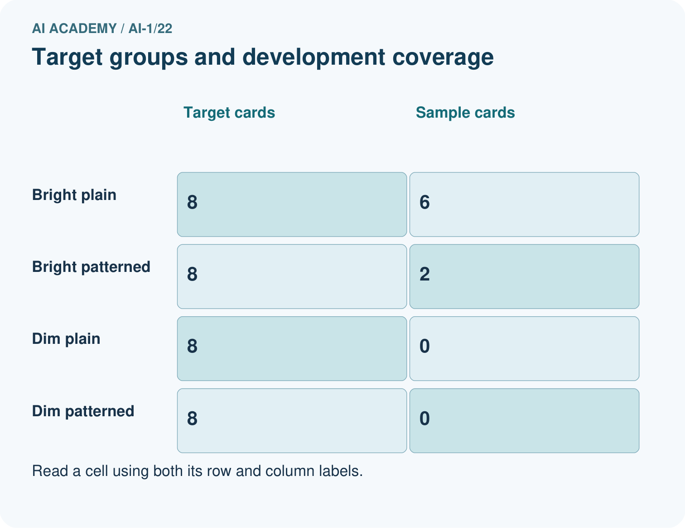
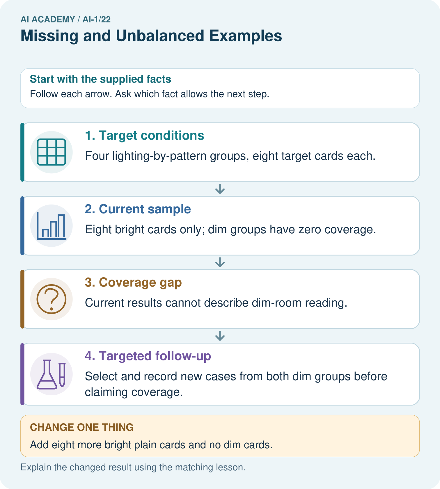
Read the picture one step at a time
Why this result follows
Adding more bright cards can increase sample size without addressing the missing condition. A coverage check asks which relevant situations are absent, not merely how many rows exist. Deliberately selecting dim cases helps investigate those conditions, but the resulting test should not be advertised as a random survey unless its selection really was random.
What this example does not establish
Coverage does not guarantee accuracy, and targeted cases alone do not supply a population-wide success estimate.
Student lesson · 7 of 14
Find and repair a mistake
COMPARE
Same Result, Different Reason
A comparison helps reveal the true concept boundary.
| Case | Evidence | What it shows |
|---|---|---|
| Day photos | many clear examples | strong represented condition |
| Night photos | none available | coverage gap |
| Cats 90, dogs 10 | uneven class counts | class imbalance |
| One dog copied 20 times | count rises, variety does not | weak repair |
Repair two tempting claims
CLAIM A A model can infer missing conditions automatically.
Repair:
CLAIM B Copying rare examples many times creates new variety.
Repair:
A closer explanation
A careful report identifies the target, frame, selection method, distinct cases, assessed outcomes and gaps. For the original sample: 5 of 6 selected bright-circle cards were correct; the 18 cards in other conditions were not assessed. This is useful evidence with a narrow reach, not a score for all future images.
Even checking all 24 cards answers a question about that fixed collection and that recogniser version. New image sources, different lighting or other shapes introduce new cases. Revisit the target and the coverage plan when the intended use changes.
Student lesson · 8 of 14
Practise together
GUIDED PRACTICE
Try It, Check It, Explain It
Use support now so you can succeed independently later.

Explain how the picture story demonstrates this idea: What is absent can shape a system's failures.
Use a fresh example to explain missing example.
Trace a new input → process → output example.
Find and repair the error in: Copying rare examples many times creates new variety.
Invent one edge case and name the safe response.
A closer explanation
Imagine a new plan selects 2 distinct cards from each of the four conditions: 8 cards in total. One selected dim-square file cannot be opened. Only 7 have assessed outcomes. Record the missing file and its condition; do not call it a recognition error or pretend all 8 outcomes were checked. This exercise evaluates recognition only, so file availability is reported separately.
Choose and document cases before seeing their outcomes. If you use the results to revise the recogniser, keep a separate unseen final test as in Week 15. Coverage and an unseen test solve different problems: one asks which conditions appear; the other asks whether the evaluation cases influenced the revision.
Practise with less help: Separate files from distinct cases
Use workbook W2 for the connected example “Sampling and coverage”. First fill the input and rule boxes. Try the middle steps before asking for a hint. After a hint, try the next step yourself.
| Plan | Do | Check |
|---|---|---|
| What is given? Which rule or procedure applies? | Record each intermediate step. | Does the result follow? What remains unknown? |
Explain your trace to a partner. Your partner points to one step to check. Swap roles on the next case. Each person writes their own explanation.
Check your reasoning
Use the worked case for Sampling and coverage. Proposed explanation: “More records always remove bias”. Decide whether this explanation is supported. Point to the step or supplied fact that decides; explain your repair if needed.
Answer on your own before discussion. If you are unsure, say which step you need help with.
Explain the picture
Would testing only dim plain cards close every current gap? Point to the target groups.
This is supported practice. Keep the separately named independent case for an attempt before feedback.
Student lesson · 9 of 14
Run the investigation
EXPLORER LAB
Missing-Condition Detective
Predict first, test honestly, and explain what the evidence means.
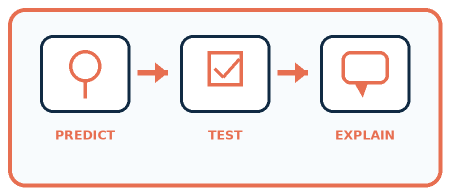
State your prediction before the result is known.
Complete the task: Predict failures in an animal set missing night photos.
Keep a normal case and an edge case clearly separated.
Record what happened—even when it does not match your prediction.
Explain the result, one limitation, and the next useful test.
| Case | Prediction | Observed result | What it means |
|---|---|---|---|
| Normal | |||
| Edge |
Plan → try → check
Before trying: what do I expect, and why? While trying: which step could first go wrong? Afterwards: what did I actually observe, and what should change? Keep “not run” if you only traced the procedure.
Student lesson · 10 of 14
Build your understanding
PRACTICE LADDER
Climb from Recall to Defense
Each step asks for a stronger kind of understanding.
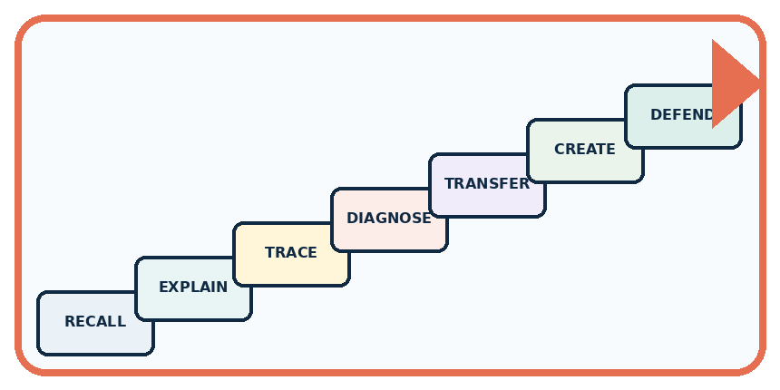
RECALL Define missing example.
EXPLAIN What is absent can shape a system's failures.
TRACE Show the input, process, and output.
DIAGNOSE Repair: A model can infer missing conditions automatically.
TRANSFER Apply the idea to a new home or classroom case.
CREATE Design one revealing test.
DEFEND Give a claim, evidence, mechanism, limit, and safe action.
Student lesson · 11 of 14
Connect your project
PROJECT
Helpful Classroom Sorter
Build one coherent system across the year, one evidence-based decision at a time.
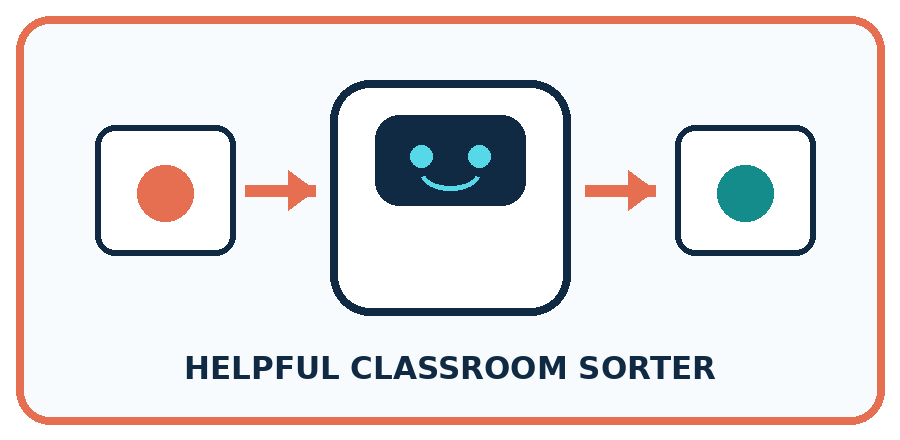
What real classroom need does this serve?
What information is necessary—and what should stay private?
What happens inside the process?
What normal and edge cases will you test?
When should it say not sure or ask a person?

My project decision:
Evidence for your project
Create a sorter coverage table crossing important classroom conditions, then state which groups each test actually represents.
Student lesson · 12 of 14
Show what you know
MASTERY
Fresh-Case Independent Proof
Complete this after teaching and guided practice have ended.
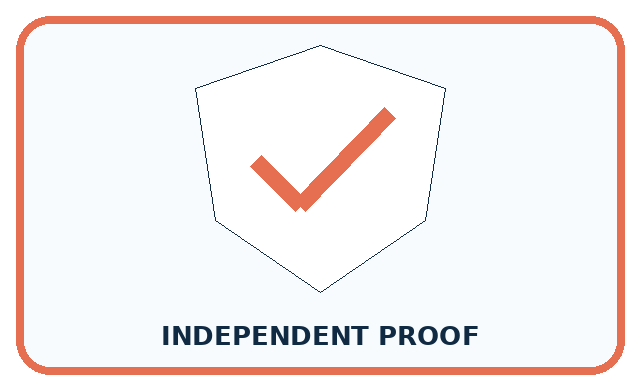
□ Name or draw the fresh case.
□ Trace input, process, and output.
□ State the conclusion and strongest evidence.
□ Name one limit, failure, missing clue, or fairness/privacy concern.
□ Explain one safe next action or improvement.
Independent evidence:
My level: □ Not yet □ With one hint □ Independently □ I can teach it
Student lesson · 13 of 14
Study a complete case
Week 22 Worked case
Use the supplied details to practise the weekly concept before attempting the independent question. This case extends the illustrated lesson.
The situation
Training includes nine daylight leaf photos and one low-light photo.
The question
What intended-use gap is present?
Worked explanation
Low light is poorly represented. Add varied, correctly labelled low-light examples if that use is intended. Copies of one photo do not add equivalent variety.
Explain it in your own words
Which detail supports the answer, and why does it matter?
Trace the supplied case visually
Training examples can leave gaps
| Evidence or stage | Value or result |
|---|---|
| Daylight photos | 9 |
| Low-light photos | 1 |
Training includes nine daylight leaf photos and one low-light photo.
What intended-use gap is present?
Low light is poorly represented. Add varied, correctly labelled low-light examples if that use is intended. Copies of one photo do not add equivalent variety.
Student lesson · 14 of 14
Try a new case independently
Independent case: Audit a new sound-recognition claim
A fixed target has 20 invented clips: 5 quiet bells, 5 noisy bells, 5 quiet claps and 5 noisy claps. A tester selects 4 distinct quiet bells from a quiet-bell-only list; 3 are correctly labelled and 1 is wrong. Write a supported result, name missing conditions and explain why the result is not established for all 20 clips. Propose an 8-clip plan that includes every condition, with no clip selected twice.
Attempt this case before feedback. Record any help. Earlier examples below are further practice; a case already practised with feedback cannot establish fresh transfer.
Week 22 Independent application
Close the worked explanation. Apply the idea to this different question without copying.
A photo sorter trains on ten bright photos and no dim photos. What group of examples is missing? Design a test that reveals the gap.
My answer, with a trace, calculation or supporting evidence
Create and test
Change one relevant detail. Predict the result before testing. Include a boundary or missing-information case when it helps reveal a limit.
My changed input and expected result
Connect to your project
List normal, low-light, partly hidden, worn, and unusual items; mark which conditions are missing from the sorter data.
The evidence I will keep
Your teacher has the independent answer and scoring criteria. Complete the matching workbook week to keep your practice evidence together.
Transfer practice from the original programme
A training set has 18 daylight photos and two dark photos of one object. Copying the dark photos eight times balances the counts. Does it balance the variety? Design a better collection step.
Use feedback to improve
Attempt the independent case before hints. Record whether you worked alone, used a hint or followed a model. After feedback, fix the first unsupported step and explain why it changed. A later check uses a changed case, not a copied answer.